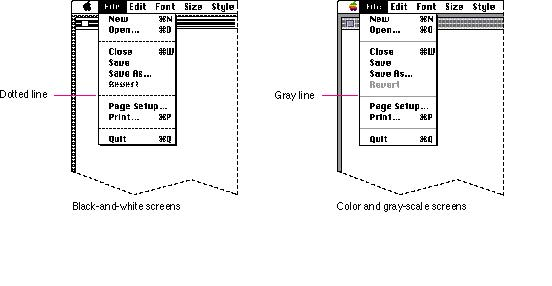
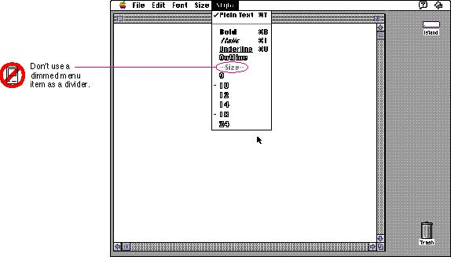

|
Menu DividersUse standard menu dividers to separate groups of commands in your menus. On color and gray-scale screens, a gray line serves as the divider. For display on black-and-white screens, a dotted line appears separating groups of menu items. Figure 4-14 shows these two types of dividers.Figure 4-14 Standard menu dividers  Even though the Menu Manager allows you to use other techniques to divide menus, use the standard dividers. For example, don't use a dimmed menu item as a divider. Dimmed items always represent a menu item that is usually available, but, in a certain context is not. Figure 4-15 shows an example of a menu divider you shouldn't use. Figure 4-15 An inappropriate menu divider  |